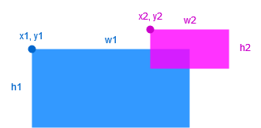
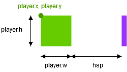
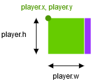

Making a barebone platformer with Löve - Part 2
Continuing from where we left in the previous article. In this part, we’ll handle basic player movements and collisions.
Moving the player
If you recall, the rectangle representing our player is drawn on the screen according to the player.x and player.y values, which we initialized during the call to the love.load function. To move the player, we need to change these values each frame, to reflect the current position of the player. This is where the love.update function will prove useful.
Before looking up what the code in will love.update be, it’s best to explain how the Löve coordinate system works. The origin of the coordinate system is the top left point on the game window. The coordinate of this point is (0, 0). Since the default size of the window is 800600, the bottom right* point of the game window has for coordinate (799, 599).
picture here
We’ll start by handling the horizontal movement of the player. For that, we need to calculate its horizontal speed. Let’s create a new variable called hsp(for horizontal speed), by initializing it to 0 in the love.load function:
|
|
We need to calculate the value of hsp each frame in the love.update function. How to do this? The player will move when the user is pressing a key. So, we’re going to use a new function called love.keyboard.isDown("keyName") to check this. This function will return true if the key identified by “keyName” is pressed, and false if it’s not. We’re going to use the directional arrow keys for example. Copy and paste this code into the love.update function:
|
|
If you look back to the coordinates diagram a few lines above, you can see that if we go to the right, the x coordinate increases, while if we go to the left, the x coordinate decreases.
It’s exactly what’s happening here: if the player pressed the key called “right” (which is the right directional arrow key), hsp is positive and player.x increases. If the player pressed the key called “left”, it’s the opposite. Finaly, if the player is not pressing the right or left directional arrow key, we’re not moving him horizontally by setting hsp to 0.
Here’s the code so far, try running it and moving the player:
|
|
Handling collisions
This is the hardest part of this tutorial, so pay attention. We’re going to integrate into our code a function provided on the Löve wiki:
|
|
(To add a function to your code, just copy and paste it underneath the love.draw function)
This function will return true if the rectangle of coordinates (x1, y1), width w1, and height h1, overlaps with the rectangle of coordinates (x2, y2), width w2, and height h2. A picture is worth a thousand words:

In this case, the function will return true as the two rectangles overlap.
We’re going to create a function that will check for the presence of a platform at a given location. To do this, we will, simply enough, check for the presence of each platform in our platforms object.
|
|
If any platform is present in the rectangle of coordinates (x, y), width w, and height h, this function will return true. Before using it though, we’re going to need another function, a bit simpler: we’re going to write a function that will return 1 if its argument is positive, and -1 if its argument is negative. Easy enough:
|
|
With this two new functions, we will be able to handle collisions. How so? We’re going to change the player.x = player.x + hsp line by checking beforehand if a platform is not in the way of the player. Here’s the updated version, don’t worry I’ll explain:
|
|
We’re beginning by calculacting an horizontal offset. It’s a bit tricky: since the origin of the player sprites is on the left, if the player is going to the right we’re going to need to add the player width to our calculations. So we’re setting hoffset to player.w.
Then, we’re going to check for a platform in a area the height of the player and one pixel wide.
|
|
It’s located at (player.x + hoffset + hsp, player.y), so it will look like this for exemple (the area we’re checking is colored in purple):

If there’s no platform in this area, we simply move the player like before by doing player.x = player.x + hsp. If there’s indeed a platform in this area, what we’re going to do is move the player pixel by pixel until he’s right next to the platform. At this point, we stop his movement. To do this, we first check for a platform right next to him.
|
|
The area will look like this this time :

While there is NO platform in this new area, we add 1 or -1 to player.x. That’s were the sign function come in handy: by doing player.x = player.x + Sign(hsp), we’re moving the player 1 pixel right if hsp was positive, and 1 pixel left if hsp was negative. The movement will stop as soon as a platform enter this area.
Here’s the final code for this part, try and run it:
|
|
Conclusion
We’re now handling horizontal collisions, which was probably the hardest part. In the next article, we’ll deal with jumping and vertical collisions. This should be an easier one.